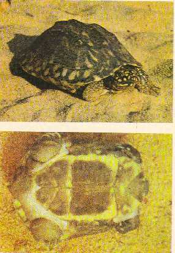

|
Digitized
Inventory of Animal Resources: Reptilia |
Geoclemys hamiltoni ( Gray 1831 )
Taxonomic Details
----- Scientific Name
----- Classification
----- Synonyms
-----
Common Names
Other Biological Details
----- Habit and Habitat
----- Distribution
---------- Extent of Occurrence
---------- Area of occurrence
---------- Altitude
---------- Population
-----
Conservation Status
----- Diagnostic Features
----- Breeding system
Miscellaneous Information
Literature
Geoclemys hamiltoni ( Gray 1831 )
Family :
Classification:
Synonyms:
Common Names: Black
spotted Pond Turtle or North
Indian Freshwater Tortoise
Absolutely aquatic, prefers to live in quite shallow and clear water with plenty of macrophytic vegetation. Carnivorous in its habit and its diet consists of small snails.
Extent of
Occurrence
Ganga
and Sind River Systems i.e., from Pakistan to Bengal
Area of occurrence: Bihar, Punjab, Uttar Pradesh, West Bengal
Altitude:
Population:
Conservation
status:
Extremely
vulnerable, believed to be fairly abundant during early 20th
Century from Sind to Bengal, now depleted drastically in number
Size
:
Fairly large species, reaches a length of 31 cm
Body :
Head large, broad, snout rounded, as
long as the orbit and slightly projecting beyond the lower jaw.
Skin of the posterior portion of the head is
divided into large shields. Upper
jaw broadly emarginated in the middle.
Limbs :
Limbs are with fully webbed digits and have transversely enlarged scales.
Tail :
Tail short in comparison to the body, covered below with small granular
scales.
Carapace :
Tricarinate, strongly convex with three interrupted keels in addition to
the vertebral and costal keels; posterior margin serrated. The nuchal shield is
not very large. First vertebral
shield is longer than broad. Plastron
is intimately attached to the crapace by suture, axillary and inguinal
buttresses are strong but short. Entoplastron
is situated quite anterior to the humero-pectoral suture.
Plastron is almost equal to the carapace in length, angulate laterally,
truncate anteriorly, posterior plastral lobe is much narrower than the opening
of the shell and as long as the width of the plastral bridge, deeply notched
posteriorly.
Colouration : General dorsal colour is black to dark brown, richly spotted and streaked with deep yellow. Soft parts dark brown with numerous round yellow spots which are largest on the head and neck.
Breeding system:
Nesting : Nothing is known about its breeding habits.
Miscellaneous Information Threat
Commercial exploitation of sand and removal of aquatic vegetation along the rivers, results in bank and soil erosion is most important threat to the existence of the species. Hydro electric projects, reservoirs has caused immense problem to the free movement of the turtles, as well as damage to the breeding sites, as these are site specific.
